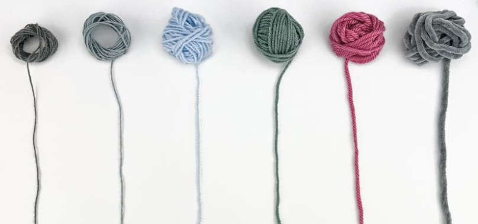
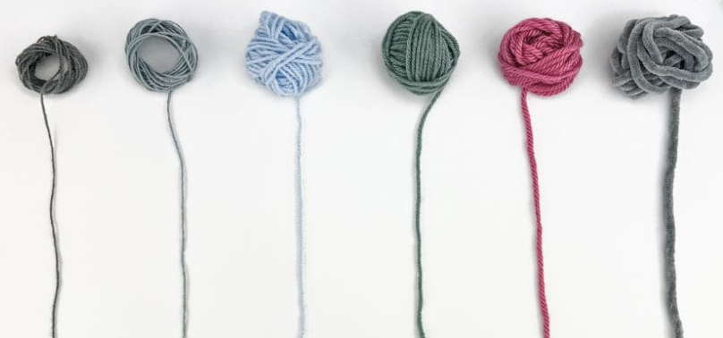

Benodigheden
Ja, dat is alles wat je nodig hebtom te beginnen, een haaknaald en een bolletje wol! Natuurlijk zal je, naarmate je beter word met haken, werschillende kleuren en types wol gebruiken, en daar zal je dan weer verschillende grootte haak naalden voor nodig hebben, maar om te beginnen heb je slechtsdeze twee items nodig.Wel zal het natuurlijk handig zijn om een tutorial video of twee tevolgen als je net begint. Ik heb een paar van mijn favoriete tutorials op deze pagina gezet.
Haak grootte en Wol gewicht
 

Als je wat meer ervaring opdoet met haken, zul je merken dat je ook rekening moet houden met de grootte van je haaknaald en het gewicht van de wol. Dat klinkt misschien ingewikkeld als je er niet bekend mee bent, maar eigenlijk is het heel eenvoudig. Je haaknaaldgrootte, zoals de naam al aangeeft, verwijst naar de dikte van je haaknaald. Deze grootte wordt vaak aangegeven in millimeters (ml) aan het einde van je haaknaald. Het wolgewicht geeft aan hoe dik of dun de wol is en beïnvloedt het eindresultaat van je haakwerk. Het begrijpen van deze eenvoudige concepten opent een wereld van mogelijkheden voor je haakprojecten!